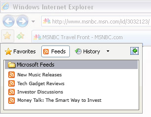
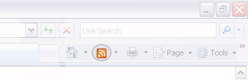

Необходимые сведения доставляются прямо в обозреватель Internet Explorer 7


RSS-каналы
Не тратьте время на проверку наличия обновлений множества различных узлов и блогов. Пользователь может выбрать веб-узлы и темы, которые его интересуют, и обозреватель Internet Explorer 7 будет доставлять все новые заголовки и обновления в центр избранного.